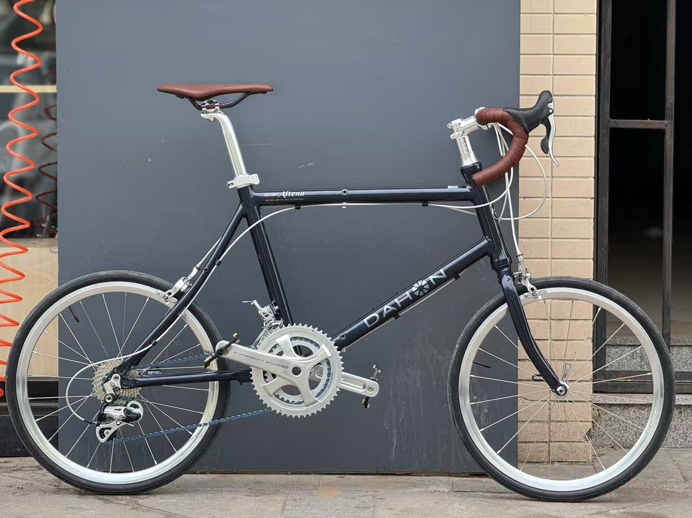
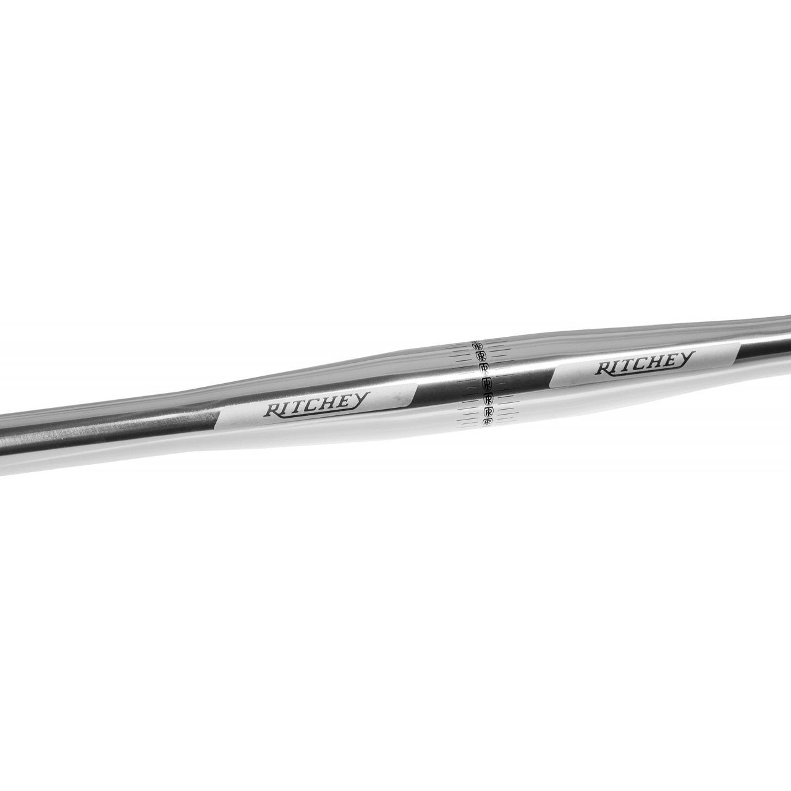
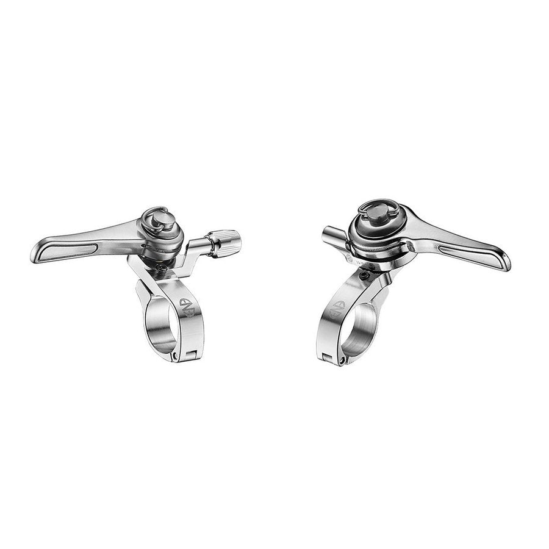
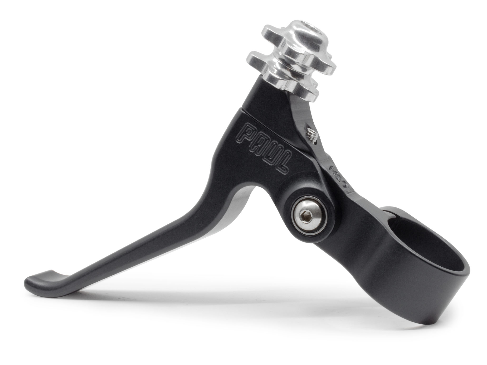
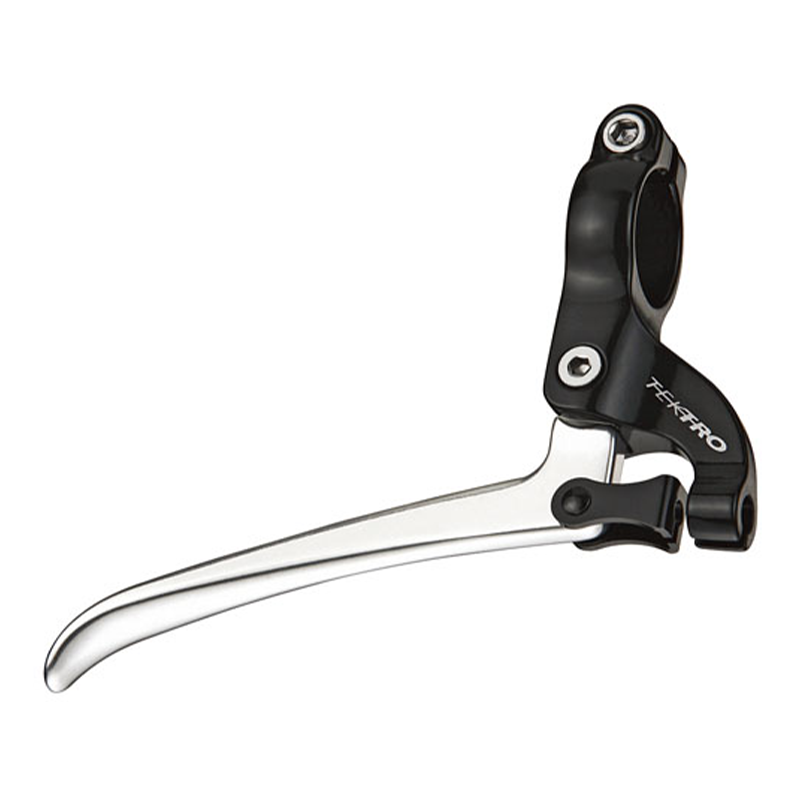
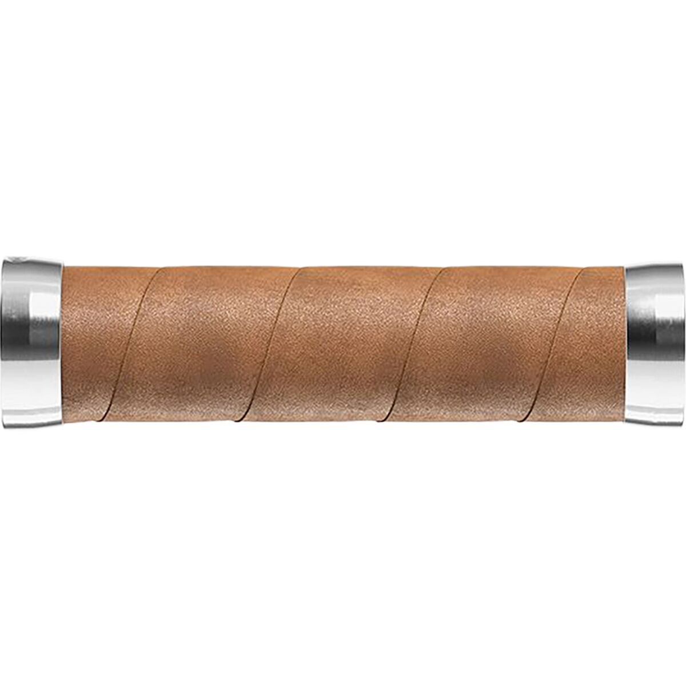
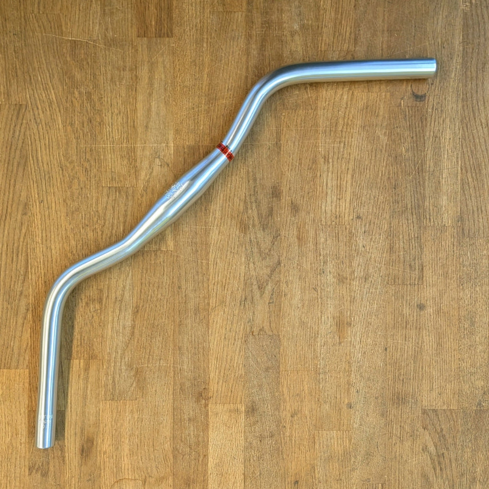

高级复古方案 · 我推荐
触感和加工质感最配您现在这台车。Paul 的全银 CNC 刹把会成为很漂亮的视觉支点。
- Ritchey Classic Flat HP Silver · 31.8 × 560
- Dia-Compe ENE 11S Thumb Shifter · 左右一对
- Paul Canti Lever · Silver，标准或短握距
- Brooks Slender Leather Grips · Aged / Antique Brown
取向：轻、耐用、完成度最高
围绕您现有的 Campagnolo Centaur 11 速、银色夹器与棕色皮座，这是一套可以直接下单比对的平把选件表。核心是保留 Centaur 前后拨，以 Dia-Compe ENE 11S 的摩擦逻辑完成变速。

Ritchey 恰好是 31.8 × 560 mm、抛光银、5° 后掠，尺寸与另一辆成功平把化的 Dash Altena 完全重合，无需裁切；Paul 是少数明确标注适用于 side-pull road caliper 的银色短拉高端把刹。它们让银色延续到把横、刹把和 Centaur 夹器，棕色只留给握把与坐垫，比例最干净。
两套都保留您现有的 Centaur RD18-CES1M、FD18-CEB2S、52/36 曲柄和 12–32 飞轮。区别只在刹把等级；变速都是 ENE 的非定位摩擦式。
触感和加工质感最配您现在这台车。Paul 的全银 CNC 刹把会成为很漂亮的视觉支点。
保持同一银黑棕语言，把预算集中在真正影响使用的把横和变速器上。
每张图片可点开大图。链接分为原厂资料与可直接查看库存的购买页；跨境库存变化快，付款前请再次确认颜色、左右和夹径。
| 部位 / 商品 | 适配结论 | 关键规格与取舍 | 原始资料 / 购买 |
|---|---|---|---|
 Ritchey Classic Flat HandlebarHP Silver · 30475457001 | 首选，直接适配 31.8 中段 / 22.2 控制段，正合 Dash Altena 原厂把立。 | 560 mm 宽、0 rise、5° backsweep、双抽 6061、约 221 g。相比宽山地把，它不会破坏折叠后的外廓；相比纯直把，多一点自然腕角。 | |
 Dia-Compe ENE 11S Thumb ShifterSilver · 左右一对 | 保留 Centaur 的正确第三方解 右侧用于 11 速后拨；左侧保留 2 速前拨。 | 26.0 mm 夹环，含 23.8 / 22.2 垫片；140 g/对。它是 摩擦式、非定位，不是 11 个固定点击：后变时以导轮噪音和链条位置微调。这正是它能跨 Campagnolo 11 速兼容的原因。 | |
 Paul Components Canti LeverSilver · Standard / Short Reach | 高级方案首选 官方明确适用于 side-pull caliper；正好对应您的 Centaur 夹器。 | 22.2 mm、short pull、6061 CNC、密封轴承、134 g/对、带桶形微调。若您手偏小或希望刹把离握把更近，选 Short Reach；否则选 Standard。请勿误买 Love Lever（长拉）。 | |
 Tektro FL750Silver / Silver · 一对 | 实用方案首选 短拉，适合 road caliper / canti。 | 22.2 mm、抛光铝、三指刹把、117 g/对。视觉非常简洁，重量甚至优于 Paul；代价是支架和手感不如 Paul 精致。该型号使用 MTB 头的刹车内线，安装时不要沿用 Campagnolo 手变的公路头内线。 | |
 Brooks Slender Leather GripsAged / Antique Brown · 130 / 130 | 配色首选 22.2 mm 标准平把握把。 | 植鞣皮革缠在铝芯上，配银色端盖。与现有棕色坐垫、车把带属于同一质感。先装 ENE 和刹把再量实际握把余量；标准 130 mm 需要按现场长度裁切或改选短款，不要先裁。 | |
 Nitto B2522AA Jitensha Bar银色视觉备选，不列入本车首购 | 不建议直接买给这台车 常见版本不是 31.8；须逐个核对夹径。 | 610 mm、明显后掠的城市把，Nitto 工艺和银色质感很出色，但会改变您这台车现在的偏公路姿态，并可能影响折叠体积。除非您决定走“舒适巡航”方向并更换把立 / 用合规转接，否则别用它替代 Ritchey。 |
两支 ENE 都靠近把立，刹把放在外侧；这样拇指够得到拨杆，手掌仍能自然落在握把与刹把上。